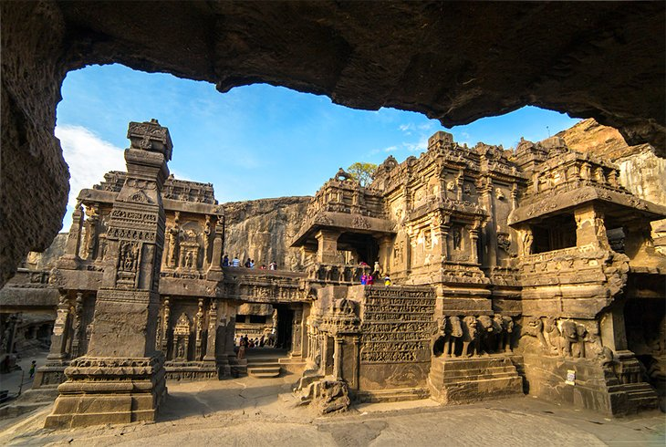
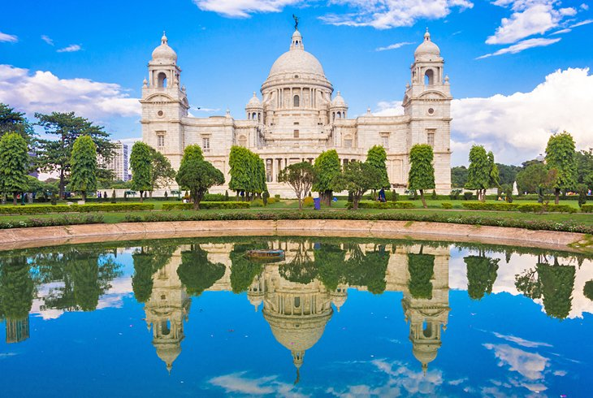

Deeply traditional yet endlessly surprising, India is one of those destinations that ends up on every traveler's bucket list at some point. Whether you're going on an epic backpacking trip or a luxe vacation, plan your adventure with this list of the best places to visit in India.
Agra
New Delhi
Mumbai
Rajasthan
Rishikesh
Varanasi
Amritsar
Goa
Kerala
Ajanta and Ellora Caves
Darjeeling
Kolkata
A journey of a thousand miles begins with a single step
If there was just one symbol to represent all of India, it would be the Taj Mahal. The monument inspires millions of tourists to make the trip to Agra every year, waking up before dawn to see magnificent structure radiate at sunrise. But Agra tops the list of the best places to visit in India for reasons that go beyond India's most famous attraction.
New Delhi
Despite its crowds and chaos, New Delhi offers tourists a lot to love. The colorful capital of India is the perfect marriage of heritage and modernity. Old Delhi contains some of the country's most treasured attractions, including the Jama Masjid, Red Fort, and Chandni Chowk shopping thoroughfare. But throughout the sprawling city, tourists can explore countless other sites of spiritual and cultural importance.
Mumbai
Want to see a more cosmopolitan side of India? Head to the energetic, coastal city of Mumbai—home to ultra-wealthy entrepreneurs and the hottest Bollywood actors. Tourists are never far from five-star hotels or gourmet restaurants in this luxe city. And even if those activities are out of budget, a cruise down the beloved Marine Drive will make you feel like royalty as you catch a glimpse of the scenic coast and glamorous Art Deco buildings.
Rajasthan
Translated to "Land of Kings," Rajasthan brims with remnants of the kings and queens of past centuries. Between its glittering palaces, stately forts, and lively festivals, this western state deserves a starring role in your trip to India.
Jaipur, part of the Golden Triangle Tourist Circuit, which also includes Agra and New Delhi, is one of the top places to visit in Rajasthan.
Rishikesh
Rishikesh has been on the radar for spiritually minded travelers since the late 1960s, when the Beatles spent time in Maharishi Mahesh Yogi's ashram—now an abandoned site that has become an off-the-beaten-path tourist attraction for fans.
The town is nestled in the foothills of the Himalayas on the banks of the holy Ganges River, and serves as a center for yoga and pilgrimages.
Varanasi
One of the oldest continually inhabited cities in the world, Varanasi is arguably the holiest place in India. The spiritual activities take place along the sacred Ganges River, where pilgrims bathe and mourners cremate recently deceased relatives in plain view of passersby.Tourists, on the other hand, find their own flavor of spiritualism taking sunrise boat rides, releasing floral blessings that float on the river
Amritsar
Amritsar, the "Jewel of Punjab," has made its claim to fame with its remarkable Golden Temple. One of the holiest places in the world for Sikhs, the gilded structure is a sight to behold, glistening in the sun and reflecting into the large pool that surrounds it. The attraction also boasts the world's largest community kitchen, which serves 100,000 diners.
Goa
India's not just full of big cities and holy sites—it also has incredible beaches down south in Goa. Its stretches of golden sand along the Arabian Sea offer something for every type of tourist, whether you're interested in hanging out with the backpacker crowd in laid-back beach huts or having a ritzy tropical getaway at a five-star resort.
Kerala
Head south of Goa, and you'll trade beaches for tranquil backwaters in Kerala. Nothing beats the experience of hopping aboard a traditional thatched-top houseboat in Alleppey (also known as Alappuzha) and slowly floating through palm-fringed lagoons and rivers, either as a day trip or overnight adventure. You'll enjoy freshly cooked Indian cuisine on the water and breathtakingly beautiful natural sights and wildlife.
Ajanta and Ellora Caves

Time travel isn't a reality for travelers quite yet, but you can get pretty close at the Ajanta and Ellora Caves in Maharashtra. Both UNESCO World Heritage Sites, the caves feature intricate carvings from at least 1,500 years ago.
The Ajanta Caves are the oldest of the two attractions, featuring around 30 Buddhist cave monuments cut into the rock as far back as the 2nd century BC.
Darjeeling
Sightseeing in India doesn't get much better than what you'll discover in Darjeeling. The hill station in West Bengal is beloved for its lush green tea plantations, awe-inspiring snow-capped peaks (including Khangchendzonga, the world's third-highest mountain), and serene Buddhist monasteries. This is the perfect place to arrange a mountain trek or mountain biking adventure.
Kolkata

India's third-largest city, Kolkata, is a decaying masterpiece of former British India, brimming with colonial-era architecture. The top things to do in Kolkata include seeing the Victoria Memorial, a white marble monument that features a museum with dozens of galleries, and Park Street, a famous thoroughfare with shops and restaurants that bustle 24/7, especially during the holidays.